R4 · G-50 · Köşe Kıraathanesi
“zemin ve duvarlar hep ve yan taraflar hep böyle daha yapılmamış asset gibi hissettiriyor ona da çözümler sun ve öner. mesela etraf bahçe veya çimenlik gibi olabilir vs vs.” Kullanıcı · 2026-09-16 oyun testi
Ölçüm 18 kareyi, kare başına 6.400 ışınla taradı; her ışının vurduğu yüzey sınıflandı ve aynı karenin gerçek pikselleriyle eşleştirildi. Aşağıdaki on iki kol gerçek oyunun içinde, aynı ışıkla, aynı kadrajdan çizildi — hiçbiri koda girmedi. Her kolun altındaki iki sayı: taban farkı = kolun karenin yüzde kaçını değiştirdiği, grup içi = grubun ilk koluna göre farkı.
Kadraj: açılış salonu, oyuncu (−14, 3). Bu karede boşluk %20,0 — ölçülen en büyüğü. Altı kolun hepsi karenin aynı %17,8'ini dolduruyor; fark kapsamda değil içerikte.
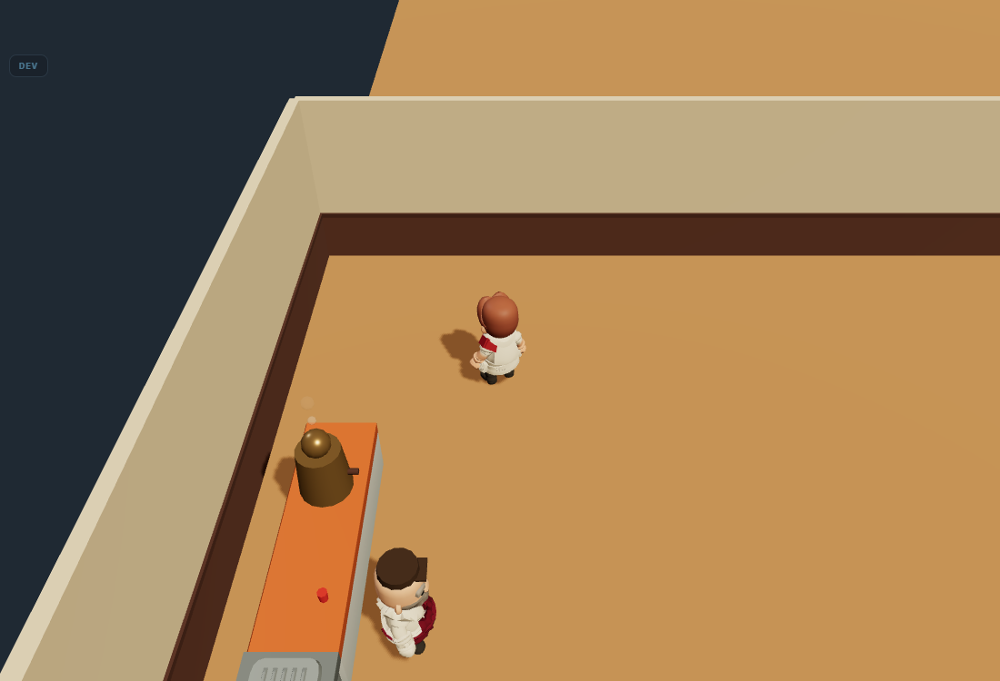
Zemin düzlemi bitiyor ve arkasında #1f2933 duruyor. Sıcak ahşabın yanında koyu bir delik.
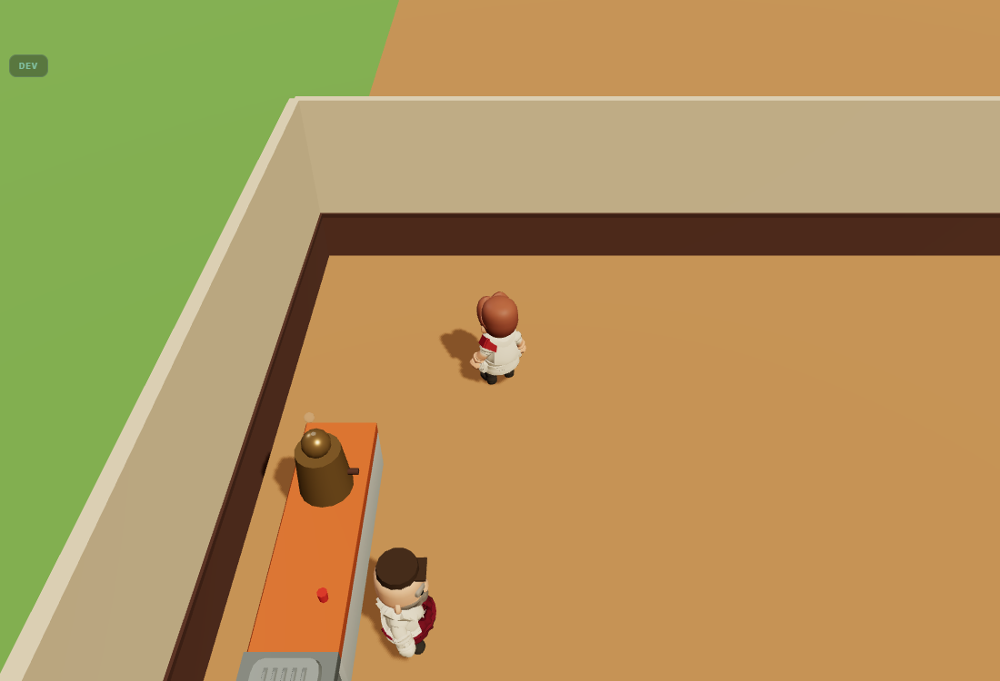
Kullanıcının kendi önerisinin en yalın hâli: dört düzlem, sıfır model.
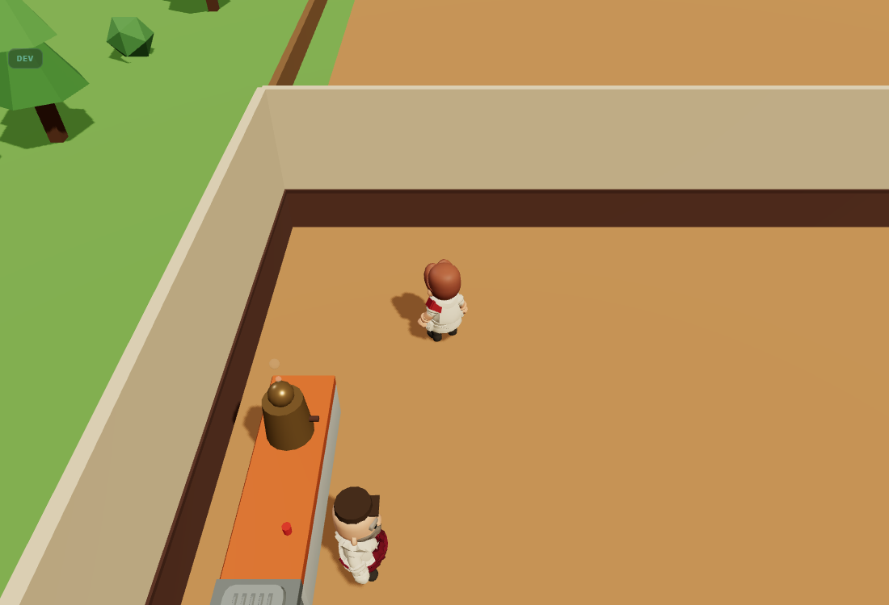
67 nesne, C1'e göre ekranda 2,6 puan getiriyor. Bedeli en yüksek, farkı en küçük kol.
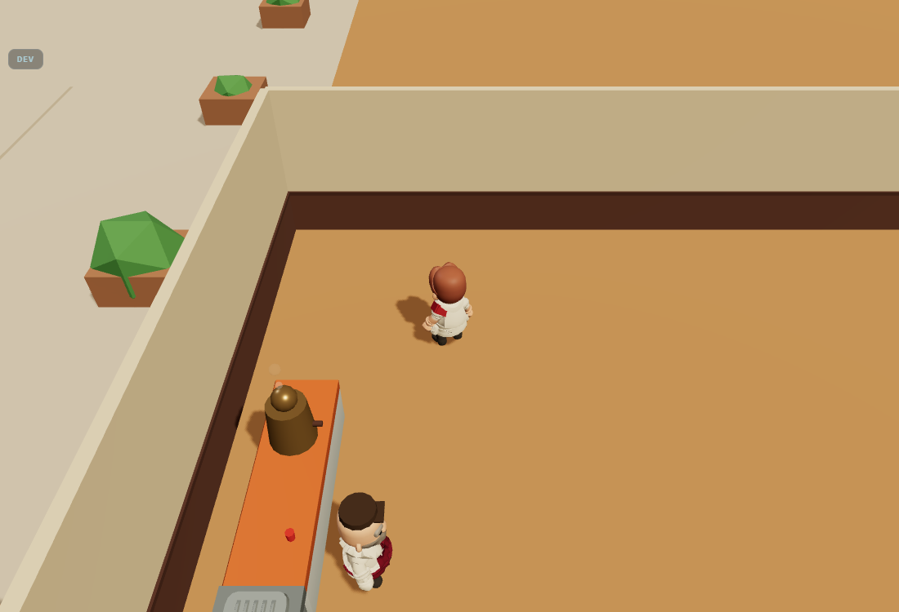
Mekân bahçeye değil avluya açılıyor. Taş, duvarın kremiyle aynı değerde — bina silueti zayıflıyor.
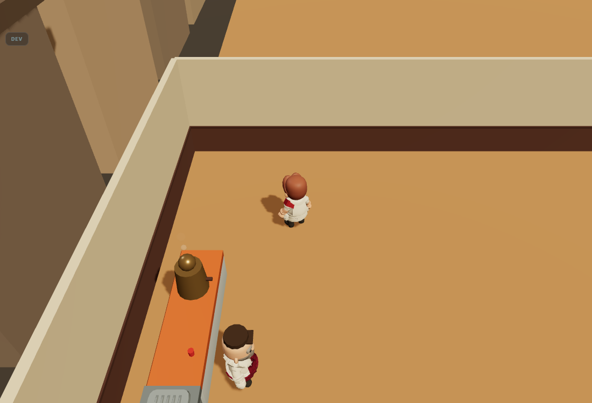
Kıraathane bir mahallenin içine giriyor. En koyu kol — boşluğu kapatıyor ama karanlığı da koruyor.
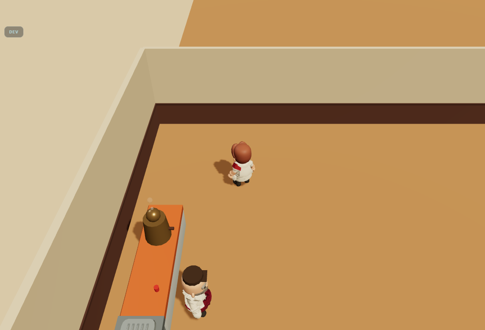
Tek satır: #1f2933 → #d9c9a8. En büyük değer değişimi, sıfır çizim maliyeti. Ama kenar hâlâ kenar.
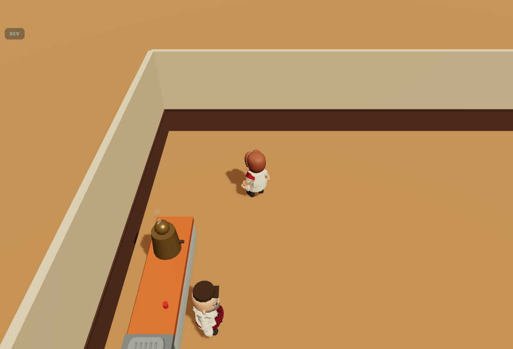
Kesik yok olur — ama mekân “oda” olmaktan çıkıp sonsuz ahşap bir düzleme oturur.
Kadraj: dolu salon, oyuncu (−6, 4). Bu karede zemin %77,2. Gölge almayan taban düzleminde sapma 1,39 ve 11 ayrık renk: yani zeminde görünen bütün ton farkı objelerin gölgesi. Gölge olmasa zemin tek renk.
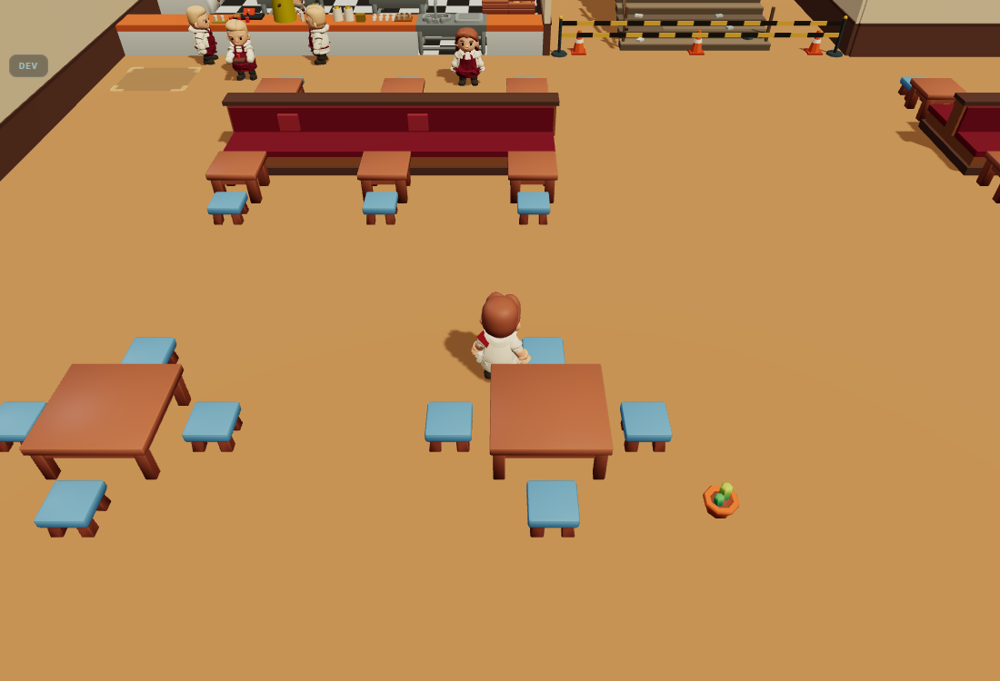
parke teması D-073'ten beri kind:'flat' — tek renk ahşap.
⚑ D-073'ü geri alır. Senin 2026-09-07'deki cümlen: “zemin kesinlikle parke değil maketteki gibi olmalı” — maketin zemini tek düz ahşap ve G2'nin tahta deseni tam bu yüzden kaldırılmıştı. Bu kol o kararı tersine çevirir.
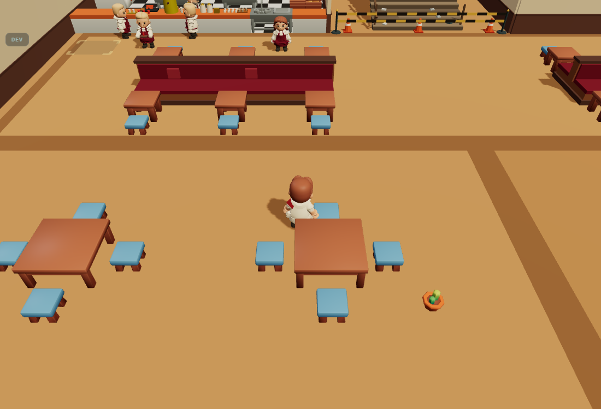
Zeminin tamamına dokunan ama hiçbir yerde bağırmayan tek kol. Salonlar birbirinden ayrışıyor; mekân “bir oda” değil “üç oda” okunuyor. Derz yok, yani D-073 duruyor.
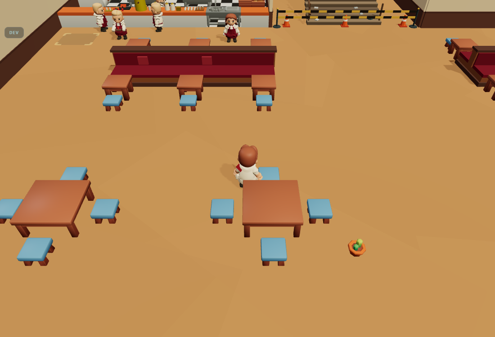
Desen değil leke: dönük, örtüşen, ±%7,5 ton. Tekrar eden hiçbir birim yok, yani D-073'ün “tahta çizgisi olmasın” kuralını çiğnemiyor — ama ölçek referansı da vermiyor.
Kadraj: açılış salonu, oyuncu (−8,5 / 8) — iki iç duvar yüzü de kadrajda. Duvar karenin ortalama %8'i; buraya harcanan her şey zeminin yedide biri kadar ekran alır.
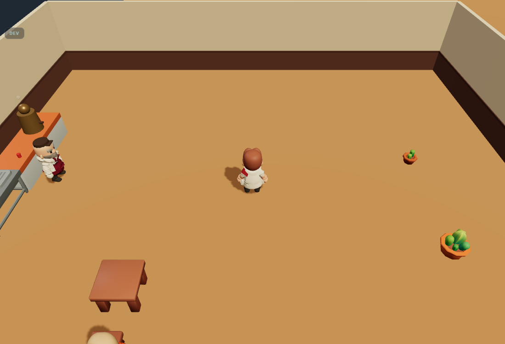
Krem badana + koyu lambri. Ölçülen en düşük bilgi yoğunluğu ekranda burada.
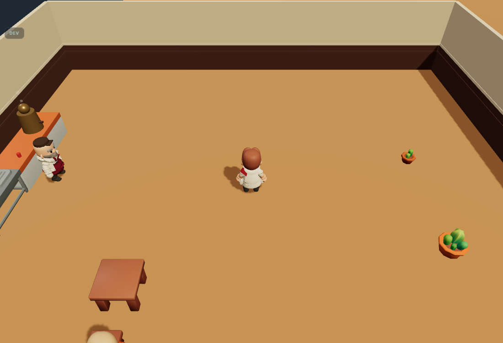
Var olan dili güçlendirir: lambri 1,25'e çıkar, üstüne açık çıta gelir. Yeni renk ailesi açmaz.
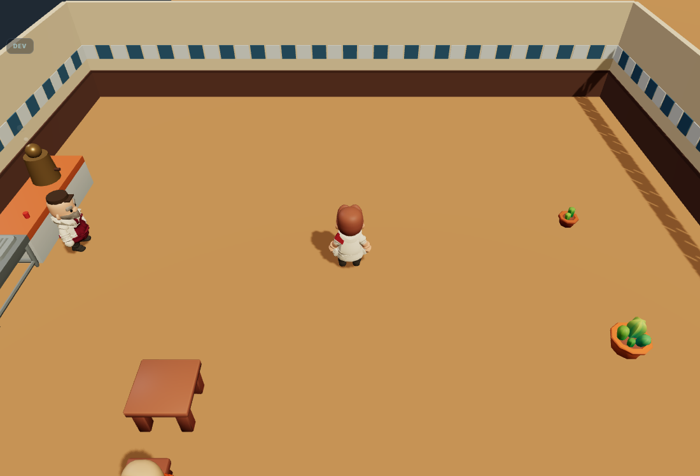
Mekâna Türk kimliği katan tek kol. Karşılığında palete yeni bir renk ailesi (mavi) giriyor.
Duvarın zeminle birleştiği hat üç kademede koyulaşır. Renk eklemeden hacim ekler — D-073'ten beri ölçek referansını gölge taşıyor, bu kol onu duvara da getirir.
%0,0. Kamera 45°'den bakıyor; gökyüzü ekranda hiç yok. Gökyüzüne konan şey görünmez.%1,6'sı ön kenarda. S6 aynı kenar
için karşı binaları %0 görünürlükle zaten silmişti — “etraf”ın görünen kısmı yanlar ve arka.| Kol | Ad | Kadraj | Taban farkı | Ort. delta | Grup içi | Nesne |
|---|---|---|---|---|---|---|
| C1 | Çimenlik kuşağı | boşluk | %17,9 | 87,7 | referans | 4 |
| C2 | Bahçe: çim + çit + ağaç | boşluk | %17,8 | 82,3 | %2,6 | 67 |
| C3 | Taş avlu + saksılar | boşluk | %17,9 | 139,9 | %18,0 | 35 |
| C4 | Komşu kütleler | boşluk | %17,9 | 57,2 | %18,0 | 28 |
| K1 | Arka planı ısıt | boşluk | %17,8 | 153,9 | %17,9 | 0 |
| K2 | Zemini genişlet | boşluk | %17,9 | 102,8 | %17,8 | 1 |
| Z1 | Tahta derzi ⚑ | zemin | %11,3 | 19,0 | referans | 1 |
| Z2 | Alan tonu + bordür | zemin | %77,4 | 8,2 | %59,8 | 15 |
| Z3 | Yıpranma lekesi | zemin | %1,0 | 28,7 | %18,9 | 46 |
| D1 | Lambri yükselt + koyult | duvar | %9,4 | 38,2 | referans | 12 |
| D2 | Çini kuşağı | duvar | %4,4 | 51,6 | %12,9 | 210 |
| D3 | Dip gölgesi | duvar | %4,5 | 23,9 | %7,6 | 18 |